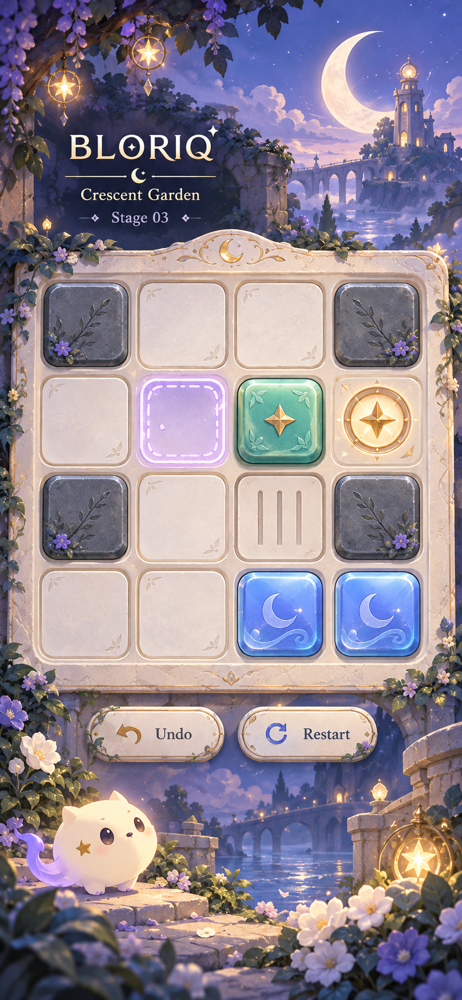
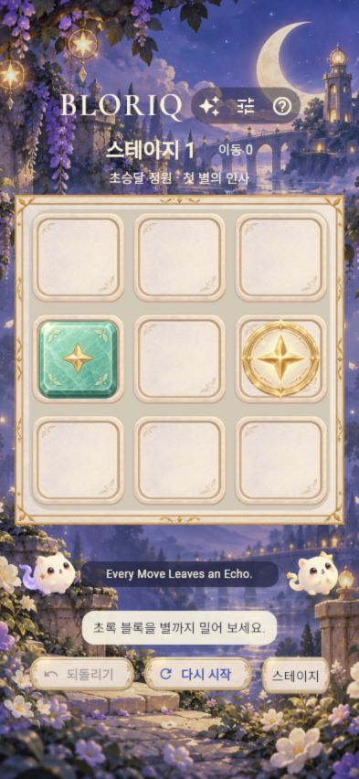
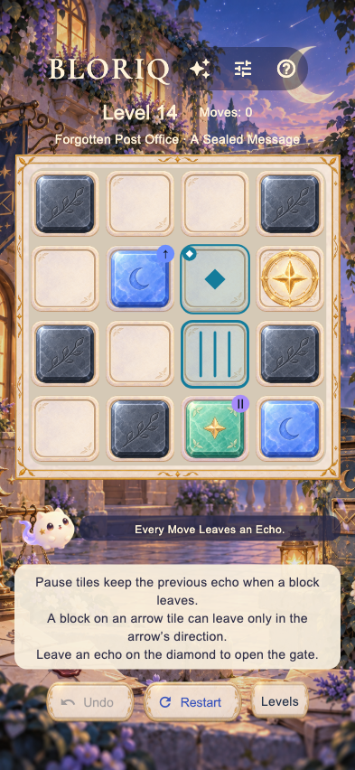

왼쪽: 선택한 콘셉트. 오른쪽: 실제 브라우저의 393×852 한국어 Stage 1. 시안은 가상 4×4 퍼즐이며 실제 Stage 1은 기존 3×3 규칙을 유지했습니다. 배경·질감·색상·가독성과 화면 구성을 비교합니다.


시안과 실제 4×4 보드의 석재·월석·비취·Echo·장애물 표현을 비교합니다. 우측은 실제 Stage14의 Light 화면이며 퍼즐 배치와 지역은 의도적으로 다릅니다.
